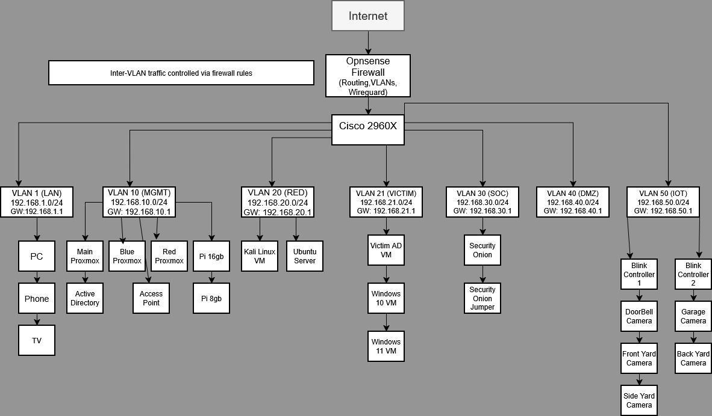
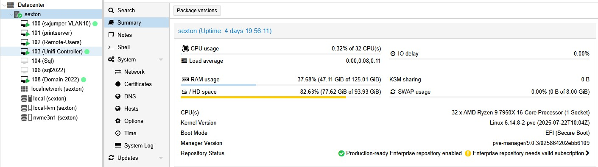
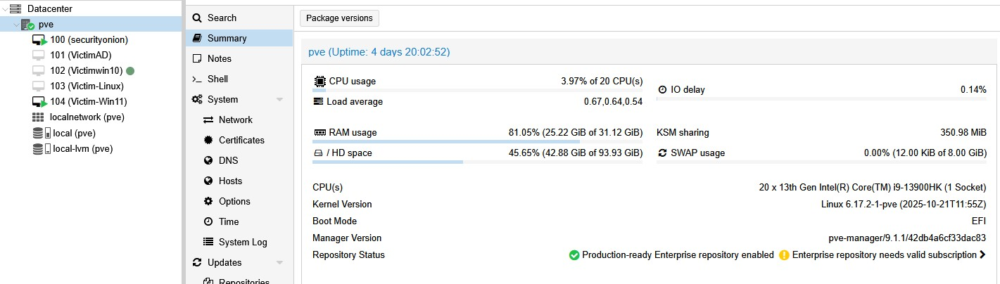
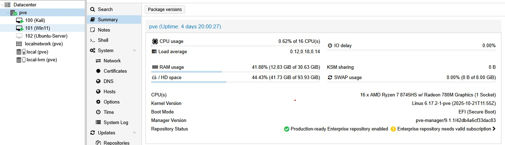
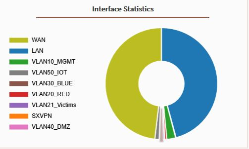
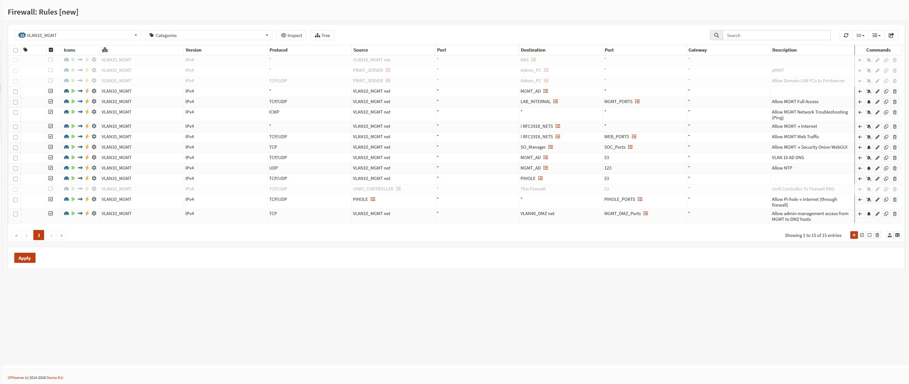

Projects
A collection of hands-on cybersecurity, networking, and homelab projects focused on segmentation, monitoring, detection, and practical enterprise-style security design.
Enterprise Segmented Cybersecurity Homelab
Overview
Designed and built a segmented cybersecurity homelab to simulate enterprise network architecture and real-world attack and defense scenarios. The environment supports both attacker and defender workflows, enabling hands-on practice with network security, monitoring, incident response, and adversary simulation in a controlled lab.

Technologies Used
- Proxmox (Multi-Node Virtualization)
- OPNsense (Firewall, Routing, VPN)
- VLAN Segmentation
- Security Onion (Network Monitoring and Detection)
- Active Directory (Windows Server Environment)
- Kali Linux (Offensive Testing and Attack Simulation)
- Pi-hole (DNS Management)
- WireGuard (Secure Remote Access)
- Cisco Switching (VLAN and Network Infrastructure)
Architecture and Design
- VLAN 10 → Management Network
- VLAN 20 → Red Team / Attacker Systems
- VLAN 21 → Victim Environment (Active Directory + Endpoints)
- VLAN 30 → Blue Team / Monitoring Infrastructure
- VLAN 40 → DMZ / Public-Facing Services
- VLAN 50 → IoT / Untrusted Devices
- Inter-VLAN traffic is routed through OPNsense and controlled via firewall policies
- Port mirroring (SPAN) configured to forward traffic to Security Onion for monitoring
- Virtual networking implemented using Proxmox bridges with VLAN tagging
- Segmentation designed to enforce isolation and simulate real enterprise trust boundaries
What I Did
- Built and managed a multi-node Proxmox environment to support segmented infrastructure
- Designed VLAN architecture to separate attacker, victim, SOC, DMZ, IoT, and management networks
- Configured OPNsense firewall rules to control inter-VLAN traffic and restrict lateral movement
- Deployed Security Onion for network visibility, alerting, and traffic analysis
- Implemented an Active Directory lab environment with Windows clients for attack simulation
- Set up attacker systems (Kali Linux) and victim machines to simulate real-world scenarios
- Configured DNS services, VPN access (WireGuard), and supporting infrastructure
- Conducted simulated attack activity to observe detection, logging, and response workflows
Results and Learning Outcomes
This project strengthened my understanding of network segmentation, traffic flow, and firewall policy design in a realistic environment. By building isolated VLANs for management, attacker, victim, SOC, DMZ, and IoT systems, I gained practical experience with enforcing trust boundaries and reducing attack surface. Hands-on monitoring with Security Onion improved my ability to analyze network traffic and understand detection workflows, while configuring firewall rules reinforced how proper segmentation limits lateral movement and enhances overall security posture.
Screenshots





Security Onion Monitoring Environment
Overview
Deployed a Security Onion monitoring environment to observe network traffic across lab segments and better understand SOC workflows such as alerting, traffic analysis, event investigation, and visibility tuning.
Technologies Used
- Security Onion
- Zeek
- Suricata
- Proxmox
- Cisco Switch SPAN Port
- Ubuntu Server
Architecture and Design
- Configured separate management and monitoring interfaces
- Mirrored traffic from selected VLANs to the monitoring interface
- Used a SPAN port to feed lab traffic into Security Onion
- Monitored segmented activity to improve visibility into attacker and victim communications
What I Did
- Installed and configured Security Onion in a standalone lab deployment
- Set up network monitoring for segmented lab traffic
- Verified packet capture and log ingestion
- Reviewed dashboards, alerts, and SOC-style workflows
- Used simulated attack traffic to understand what activity was visible and how alerts were generated
- Troubleshot interface, span, and traffic visibility issues during deployment
Results and Learning Outcomes
This project helped me better understand how network monitoring tools ingest traffic, generate alerts, and support investigation workflows. It also improved my troubleshooting skills around mirrored traffic, interface configuration, and visibility across segmented environments.
Screenshots


School Network Security Design
Overview
Created a layered school network security design as part of a capstone project. The design focused on segmentation, endpoint protection, secure wireless access, and enterprise-style architecture built in Cisco Packet Tracer.
Technologies Used
- Cisco Packet Tracer
- VLAN Segmentation
- Firewall Design
- Wireless Network Design
- Access Control Concepts
- Windows Deployment Concepts
Architecture and Design
- Separated traffic for students, staff, administrators, and guests
- Applied layered security principles and defense in depth
- Included switching, routing, and wireless design considerations
- Considered endpoint protection, patching, MFA, and access control
What I Did
- Focused on the cybersecurity and protection side of the design
- Helped define segmentation and layered defense strategies
- Contributed recommendations for endpoint security and hardening
- Supported the overall technical and business design of the environment
Results and Learning Outcomes
This project improved my understanding of secure network design in a collaborative environment and helped me connect classroom concepts to practical decisions involving segmentation, access control, wireless security, and defense in depth.
Screenshots